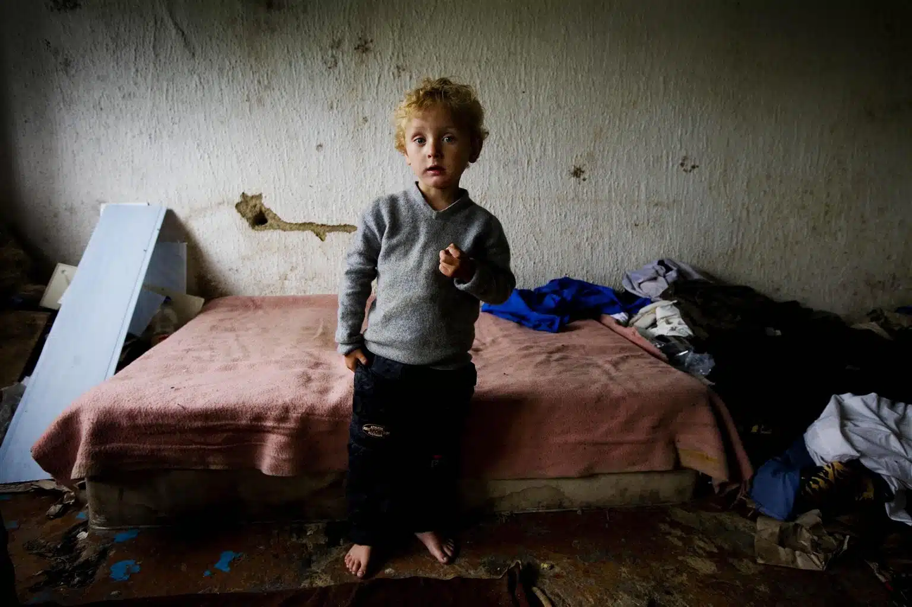

Un objet qui ne vous sert plus?
En tirer profitQui sommes-nous?
Nous sommes une ressourcerie solidaire dédiée au réemploi d’objets du quotidien. Notre mission est de racheter et revendre à prix accessibles afin de réduire les déchets et de soutenir les publics en difficulté. Ensemble, nous favorisons une consommation plus responsable et créons un impact positif pour la société et l’environnement.
Que faisons nous?
Collectes

Nous vous rachetons régulièrement vos vieux objets et jouets a prix très bas. Nous les récoltons souvent en magasin ou lors d'évènements spéciaux.
Reventes
Les objets collectés sont remis en état puis revendus à petits prix dans notre espace solidaire. Cette démarche permet de limiter le gaspillage, de rendre le matériel accessible à tous et de financer des projets au bénéfice des publics défavorisé.
Pourquoi le faisons-nous?
Protéger notre belle planète
Nous luttons contre le gaspillage en donnant une seconde vie aux objets. Chacune de vos ventes évite des déchets supplémentaires, réduit la pollution et participe à préserver nos ressources naturelles pour les générations futures.
Favoriser les défavorisés
Nos ventes solidaires permettent aux familles, étudiants et personnes en difficulté d’accéder à du matériel essentiel à petit prix. Ainsi, chacun peut s’équiper dignement tout en profitant d’un soutien de proximité.
Encourager l'économie circulaire
En collectant, réparant et revendant les objets, nous créons un cercle vertueux qui profite à tous : moins de déchets, plus de solidarité et le développement d’activités locales durables.
Vous êtes intéréssé?
Sauvez notre planète
La santé de notre planète vous est chère? Achetez dans notre magasin pour favoriser la seconde main!
Achetez un jouetAidez l'économie circulaire
Montrez que c'est possible de s'affranchir de la surconsommation!
Vendez un objet